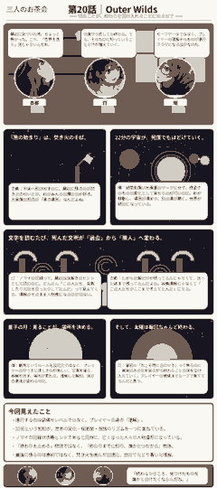

Outer Wilds
知ることが、終わりを受け入れることになるまで。
「最初はね、“宇宙を自由に飛び回って謎を解くゲーム”くらいの気持ちで始めたの。なのに、何度も同じ朝に戻されて、最後には“この宇宙をどう救うか”じゃなくて、“救えない終わりをどう理解するか”を考えてた。そこまで自分の問いが変わるゲームって、かなり珍しいよね。」
「しかも、その変化を物語の登場人物に説明されるんじゃなくて、プレイヤー自身の体験として起こすんですよね。最初のループでは何が起きているのか分からない。次は超新星に気づく。さらに“なぜ時間が巻き戻るのか”“ノマイは何をしようとしていたのか”がつながっていく。イベントが進むというより、同じ世界の意味が更新され続けるんです。」
「そこは設計として非常に大胆なのだ。経験値も強い装備も、鍵アイテムの収集もほぼ必要ない。前のループから持ち越せる最大の資産は“プレイヤーが知ったこと”なのだ。つまり進行フラグがゲーム内部の数値ではなく、かなりの割合でプレイヤーの頭の中に置かれている。知識そのものが鍵になる設計なのだ。」
「でも、そのせいでティンバーハースに戻ってくると本当にほっとするんだよね。最初はただのスタート地点だったのに、何度も死んで、怖い場所に行って、焚き火の音を聞いて目を覚ますたびに“帰ってきた”って思うようになる。宇宙は広いのに、感情の中心にはずっと小さな故郷がある感じ。」
「各地の旅人たちも、同じ役割を持っていますよね。遠く離れた惑星にそれぞれ一人でいるのに、シグナルスコープを向けると楽器の音が聞こえる。会話すると性格も孤独の受け止め方も違う。でも音としては同じ宇宙にいる。あれ、人物関係を会話だけでなく“距離と音”で描いているのがすごく好きです。」
「惑星そのものが時計として機能しているのも重要なのだ。砂が双子星の間を移動し、脆い空洞は時間とともに崩れ、巨人の大海では竜巻や島が配置を変える。普通なら画面端のタイマーで“あと何分”と出すところを、地形の変化で残り時間を読ませる。環境がUIなのだ。」
「環、宇宙が爆発してる横で“環境がUIなのだ”って嬉しそうに言うのやめて（笑）。でも分かる。最初は事故死するたびに“うわー！”って笑ってたのに、超新星を何度も見るうちに、あの青い光が怖いだけじゃなくなるんだよね。避けられないものとして、だんだん景色になっていく。」
「仕様の美しさに感動しているだけなのだ（笑）。ただ、その“慣れ”は重要なのだ。ループゲームは繰り返しで緊張が薄れる危険がある。でも『Outer Wilds』は、恐怖が薄れる代わりに理解が深まる。死を軽くするのではなく、“死ぬことへの距離”を変化させているのだ。」
「ノマイの記録も同じですよね。最初は攻略ヒントとして読むんだけど、だんだん“この人は誰と仲が良かったのか”“誰の仮説に誰が反論したのか”“失敗したとき何を冗談にしたのか”まで見えてくる。遺跡の文字なのに、亡くなった文明が急に人間関係を持ち始める。考古学がそのままキャラクター描写になっているんです。」
「翻訳装置の見せ方も良いのだ。壁の文章を一本ずつ拾うことで、会話が枝分かれした図として読める。直線的な日記ではなく、“誰かの発言に別の誰かが返す”構造が空間上に残っている。文章、建築、探索動線が同じ情報構造を共有しているのだ。」
「だから量子の月でソラナムに会えたとき、すごく変な感情になった。やっと“記録の向こう側の人”に触れられた、っていう嬉しさがあるのに、あの場所自体がすごく静かで、時間から外れているみたいで。出会えたのに、普通の意味では一緒に帰れない。その距離が切ないんだよね。」
「量子のルールを、説明文だけではなく体験で覚えさせるのも好きです。観測している間は位置が固定される。写真でも観測になる。暗闇の中では自分ごと移る。その仕組みを理解した瞬間、今まで“不可思議な背景”だったものが“使える法則”に変わる。世界が変わったんじゃなくて、自分の理解が変わっただけなんですよね。」
「だからこの作品に普通のチュートリアルを足しすぎると、かなり魅力が損なわれるのだ。ルールを先に説明されたら、“分からなかったものが分かる快感”を奪ってしまう。UI設計では親切さが常に正義ではない、という好例なのだ。」
「でも不親切なのに意地悪じゃないんだよね。船のログがちゃんと“ここにはまだ何かある”って教えてくれるし、詰まったら別の惑星へ行けばいい。一本の正解ルートを押しつけずに、“今気になってることを追っていいよ”って言われてる感じがする。」
「そして終盤、プレイヤーはだんだん“全部を救う解決策”を探している自分に気づくんですよね。ループを止めれば何かが起きる、装置を動かせば未来が変わる、と思いたくなる。でも集めた情報がつながるほど、“これは勝って元通りにする物語ではない”ことが見えてくる。そのとき、謎解きの達成感と喪失感が同時に来る。」
「終盤の操作も残酷なほど明確なのだ。ずっと安全網だったループの仕組みを、自分の手で外して進む。システム上の“いつでもやり直せる”が、物語上の“終わらせる決意”に反転する。ゲームシステムとテーマが同じ方向を向く瞬間なのだ。」
「最後の焚き火、本当にずるいよ。宇宙の終わりなのに、集まるのは旅の途中で知った人たちで、聞こえるのはそれぞれの楽器なんだもん。最初は離れて鳴っていた音が、最後は一つの場所で重なる。“この人たちに会ったこと自体が旅の成果だった”って言われてるみたいで、泣いちゃう。」
「新しい宇宙へ直接“自分たちが移住する”わけではないのも大切だと思います。今の宇宙は終わる。でも、観測したこと、出会ったこと、音を合わせたことが次の始まりに影響する。生き残ることだけを“続く”と定義しないんですよね。」
「なので私は、このゲームの本当のセーブデータはプレイヤーの記憶だと思っているのだ。エンディング後に最初から始めても、もう最初の自分には戻れない。行くべき場所も、怖かったものの正体も、最後に何が待つかも知っている。その不可逆性まで含めて“知ること”をテーマにしているのだ。」
「それ、ちょっと好き。ゲーム内では何度でも22分前に戻るのに、プレイヤーだけは本当には戻れないんだね。……じゃあ次は、焚き火でマシュマロ焦がさない練習しよっか。」
「そこだけは知識があっても毎回焦がす可能性があるのだ。」
「最後に急に生活力の話へ着地しましたね（笑）。でも、そういう小さな時間が最後まで残る作品だから、宇宙の終わりがあんなに寂しくて、同時にあたたかいんだと思います。」
今回見えたこと
- 『Outer Wilds』では、装備や数値ではなく「プレイヤーが得た知識」そのものが進行を開く。
- 惑星の時間変化がタイマー兼UIとして働き、探索・演出・世界設定を一体化している。
- ノマイの文章は攻略情報であると同時に、失われた文明の人間関係を復元するキャラクター描写になっている。
- ループで死を繰り返すことが、恐怖を消すのではなく「終わりとの距離」を変えていく。
- 最後に残るのは宇宙を救った実績ではなく、出会い、理解し、同じ焚き火を囲んだ記憶である。
マンガ
